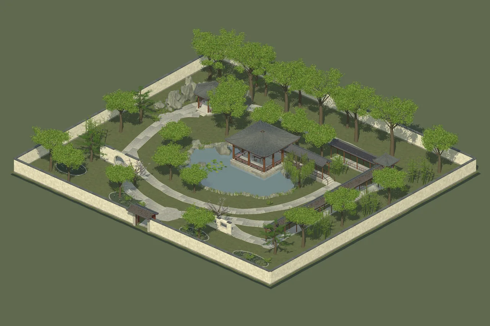
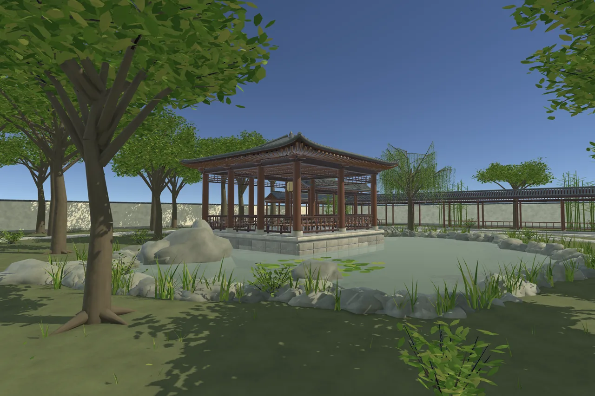
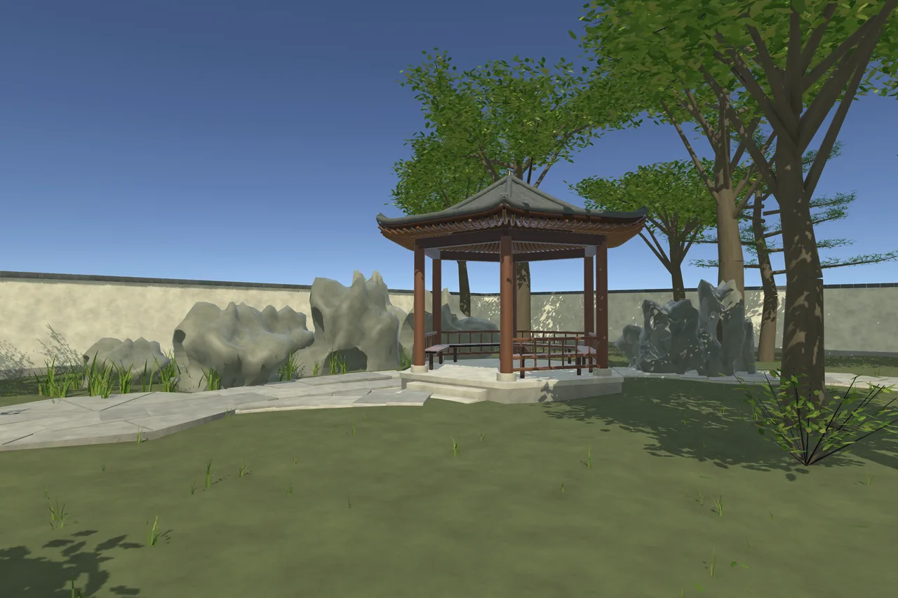

Imperial Garden
A quieter kind of grandeur.

A quieter kind of grandeur.
Water, stone and foliage compose a secluded imperial garden. Covered galleries trace the pond, leading to a waterside pavilion, rockery and a moon gate.
309 prefabs
5 sample scenes
3 foliage density levels
Local technical candidate · Not listed on the Asset StoreA closer look
Select an image to explore




Inside the project
A complete 60 × 54 metre garden with spatial sections, semantic groups, architecture assemblies and a walking demonstration. Foliage density LODs leave the architecture and ground intact.
Tested configuration
Unity 6000.6.0f1
Universal Render Pipeline 17.6.0
Windows · Direct3D 11 · Linear
Other Unity versions, render pipelines and platforms have not been verified. No target frame rate is promised.
Scope & limitations
An assembled environment rather than a snap-grid construction kit. Pond water is static: no simulation, refraction, interaction or swimming. Geometric foliage uses a supplied two-sided URP shader; no wind animation. No baked lighting or NavMesh.